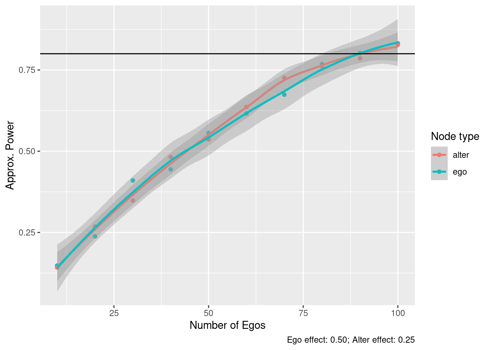

14.3 Example 3: First difference
Now, instead of looking at a dichotomous outcome, let’s evaluate what happens if the variable is continuous. The effects we are interested to identify are the ego and alter effect, \(\gamma_{ego}\) and \(\gamma_{alter}\), respectively. Furthermore, the data generating process is
\[\begin{align*} y_{itg} & = \alpha_i + \kappa_g + X_i\beta + \varepsilon_{itg} \\ y_{itg} & = \alpha_i + \kappa_g + X_i\beta + D_{i}^{ego}\gamma_{ego} + D_i^{alter}\gamma_{alter} + \varepsilon_{itg} \end{align*}\]
Where \(D_i^{ego/alter}\) is an indicator variable. Here, ego and alter behavior are correlated through a fixed effect. In other words, within each group, we are assuming that there’s a shared baseline prevalence of the outcome. The main difference is that ego and alter may have different results regarding the effect size of the treatment. Another way of approaching the group-level correlation could be through an autocorrelation process, like in a spatial Autocorrelated model; nonetheless, estimating such models is computationally expensive, so we opted to use the former.
For simplicity, we assume that there is no time effect. Two essential components here, \(\alpha_i\) and \(\kappa_g\) are individual and group-level unobserved fixed effects. The most straightforward approach here is to use a first difference estimator:
\[ (y_{it+1g} - y_{itg}) = D_{i}^{ego}\gamma_{ego} + D_i^{alter}\gamma_{alter} + \varepsilon'_i, \quad \varepsilon'_i = \varepsilon_{it+1g} - \varepsilon_{itg} \]
By taking the first difference, the fixed effects are removed from the equation, and we can proceed with a regular linear model.
# Simulation function
sim_data_prepost <- function(n) {
# Applying attrition
n <- floor(n * (1 - attrition))
# Step 1: Sampling fixed effects
alpha_i <- rnorm(n * (n_a + 1))
kappa_g <- rep(rnorm(n_a + 1), n)
# Step 2: Generating the outcome at t = 1
is_ego <- rep(c(1, rep(0, n_a)), n)
is_alter <- 1 - is_ego
y_0 <- alpha_i + kappa_g + rnorm(n * (n_a + 1))
y_1 <- alpha_i + kappa_g +
is_ego * effect_size_ego +
is_alter * effect_size_alter +
rnorm(n * (n_a + 1))
# Step 4: Computing test statistic
res <- tryCatch(
glm(I(y_1 - y_0) ~ -1 + is_ego + is_alter, family = gaussian("identity")),
error = function(e) e
)
if (inherits(res, "error"))
return(c(ego = NA, alter = NA))
# Step 5: Reject?
c(
# ego = res_ego$p.value < alpha,
ego = summary(res)$coefficients["is_ego", "Pr(>|t|)"] < alpha,
alter = summary(res)$coefficients["is_alter", "Pr(>|t|)"] < alpha,
coef(res)[1],
coef(res)[2]
)
}# We always set the seed
set.seed(88)
# Making space and running!
spower <- NULL
for (s in sizes) {
# Run the simulation for size s
simres <- rowMeans(
replicate(n_sims, sim_data_prepost(s)),
na.rm = TRUE
)
# And store the results
spower <- rbind(spower, simres)
}library(ggplot2)
spowerd <- rbind(
data.frame(size = sizes, power = spower[,"ego"], type = "ego"),
data.frame(size = sizes, power = spower[,"alter"], type = "alter")
)
spowerd |>
ggplot(aes(x = size, y = power, colour = type)) +
geom_point() +
geom_smooth(method = "loess", formula = y ~ x) +
labs(x = "Number of Egos", y = "Approx. Power", colour = "Node type") +
geom_hline(yintercept = 1 - beta_pow) +
labs(
caption = sprintf(
"Ego effect: %.2f; Alter effect: %.2f", effect_size_ego, effect_size_alter)
)
From the inferential point of view, we could still use a demean operator to estimate individual-level effects. In particular, we would require to use the demean operator at the group level and then fit a fixed effect model to estimate individual-level parameters.